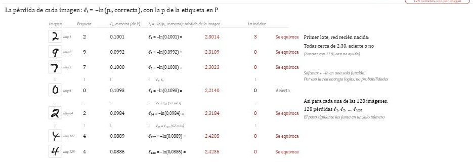
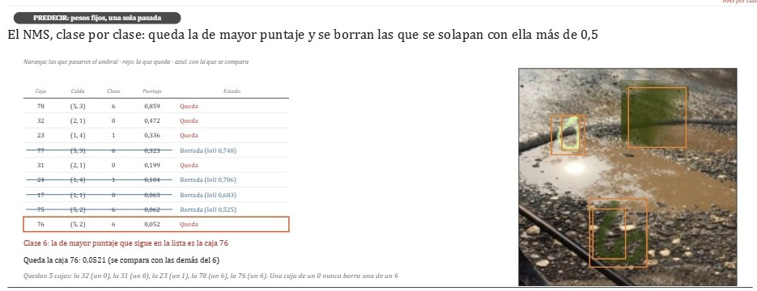

Temario · actualizado el 5 de noviembre de 2026
Machine learning desde cero, con cada operación a la vista.
Un recorrido ordenado: de la regresión lineal a la detección de objetos. Cada lección es una animación paso a paso hecha con los datos reales del entrenamiento.
5temas
2lecciones publicadas
381pasos animados
Fundamentos Tema 1
Lo que hace falta antes de cualquier red.
1.1
Regresión lineal: ajustar una recta
en preparación
1.2
La pérdida y el descenso de gradiente
en preparación
Redes neuronales Tema 2
De una neurona a una red densa que aprende.
2.1
Una neurona, número por número
en preparación
2.2
El backward con la regla de la cadena
en preparación
Redes convolucionales Tema 3
Cómo una red lee una imagen.
3.1
La CNN completa, por dentro
Una LeNet-5 aprende a leer dígitos de MNIST: lotes reales, la pérdida de cada imagen, el backward capa por capa y el paso de AdamW.
86 pasos entrenar · 43 predecir · 5 épocas

Detección de objetos Tema 4
Encontrar y encerrar objetos: cajas, puntajes, IoU y NMS.
4.1
Mini-YOLO por dentro: dígitos en la calle
Una red pequeña al estilo YOLO aprende a encontrar dígitos sobre fotos reales de la calle, desde la red recién nacida hasta las cajas finales.
186 pasos entrenar · 66 predecir · 30 épocas

Modelos de lenguaje Tema 5
Del bigrama a los transformers.
5.1
El bigrama de letras
en preparación